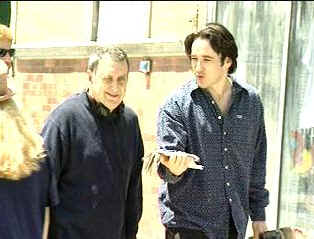

| B+High Fidelity (SE)/A-,A |
| Touchstone/2000/114/ANA
1.85 |
What makes High Fidelity rock and roll? The form
is familiar: a character undergoing a relationship crisis revisits past romances. But High
Fidelity has style in abundance. The script is consistently energetic driven with the same
pulsing rhythms as a top forty favorite.
High Fidelity has terrific energy, unusual delivery, and John
Cusack directed by Stephen Frears. (Remember The Grifters?) How
can you go wrong?
Much of the action takes place at Championship Vinyl, a used record shop owned
by Rob Gordon, a man who runs his life by the rhythms of old record albums. Gordon has just found
out that his live-in lady love is leaving him. Rob's employees, Barry and Dick are in an endless
dance to choose the right music to set the mood for Championship Vinyl. Amidst the comic riffs with
various customers, standing between the familiar bickering of Barry and Dick, Rob must resolve his
life.
 |
| Director Frears and star Cusack on the set.
©Touchstone |
John Cusack delivers another is a string of consistently underrated
performances. Cusack is probably the best actor of his generation, sliding into roles like ham on
rye with a splash of mustard. Cusack is forever youthful without appearing callow. He's an actor
that can turn a difficult phrase with all the agility of a circus juggler. Surrounding the
wonderful central performance by Cusack are two especially delightfully contrasting portrayals.
Jack Black infuses Barry with unadulterated hilarity. Expect the unexpected from Black's Barry and
you'll get what you expect. On the other side of the spectrum to Black's outrageous performance is
Todd Louiso as Dick; he keeps Black in balance. They are like a matched pair of horses, mounting
record shop life with an insane equilibrium. The ladies of Cusack's life kick up their heels in a
nicely graded chorus line. Lily Taylor and Catherine Zeta-Jones get some nice screen time opposite
Cusack.
Director Stephen Frears seems like he's rocking to the beat of this
picture as well. The pace is much like a fine compilation of hits, never flagging, with each set
piece throbbing with joy.
The special edition of High Fidelity include deleted
scenes and interview segments. The nine deleted scenes are all excellent and the interview sections
with Cusack and Frears illuminating.
Who could ask for anything more? High Fidelity is true to its name in
delivering images of reference quality. The bright transfer never lacks for punch, just as the
music is recorded with maximum energy. The record shop is a delightful mélange of color occupying
distinct space with no bloom or smearing. Skin tones are varied and natural. Blacks are lush. Every
detail is cleanly resolved. You can practically read every album cover in the record bins. The
Dolby Digital 5:1 Surround does rock, but dialogue never is sacrificed. The subtle ambient space of
the record shop or the pounding space of a disco floor are created with equal accuracy.
|
|
|
|

Selections from the Feature Archive
include articles on Akira Kurosawa, Frank
Darabont, Blonde Bimbos, Hollywood Street Gangs, or Vietnam: The
Hollywood Pariah, and many more....
Puttin on the
Ritz

Fred Astaire and Cyd Charisse bring Silk Stockings to life, a remake of Ninotchka, one of many
films successfully turned into musicals by the Hollywood dream factory. Read all about remakes into
musicals by clicking on the divine dancers.


Venerable electronics industry magazine with excellent online
selections from their hard book.

DVD News, Reviews, Previews, Easter Eggs and more.

Films of the Golden Age is
a showcase for special feature articles on film
people and Hollywood history, all illustrated with beautiful photographs and classic movie art.

The home of Francis Ford Coppola's Zoetrope
Studios has more corridors of interest than you might expect.

The
Movie Poster Archive includes extensive poster images from the films of stars like Susan Hayward,
Kirk Douglas, Katharine Hepburn and many more. Our featured star is James Stewart |